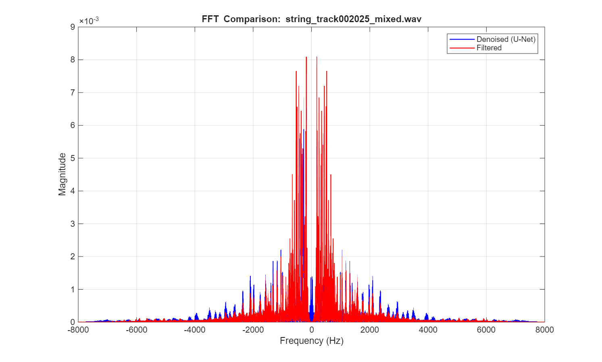
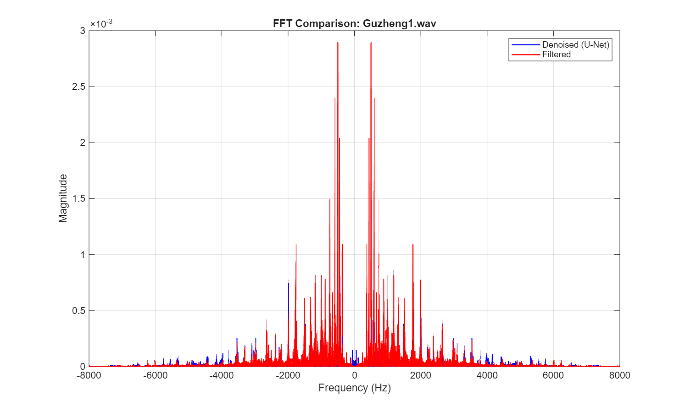
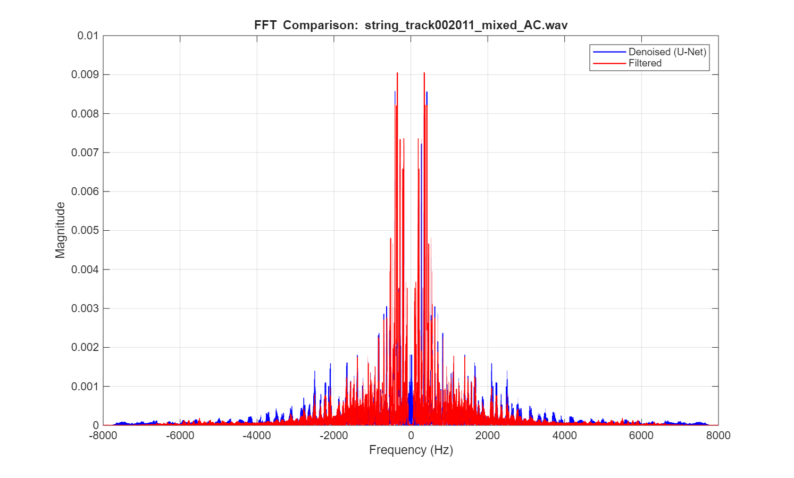
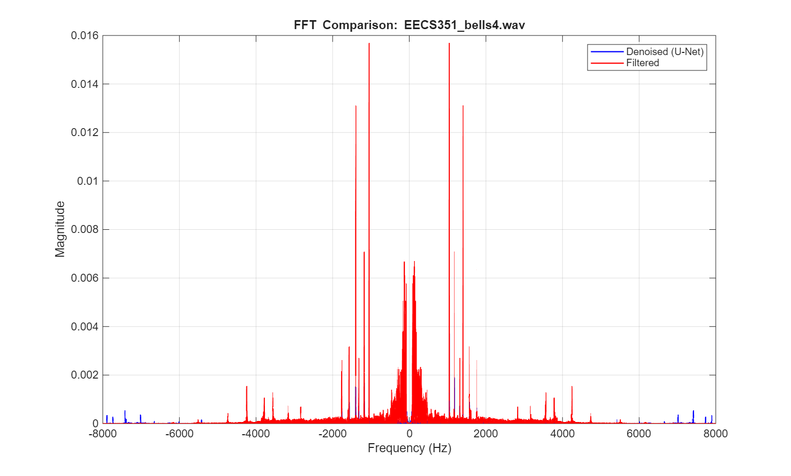
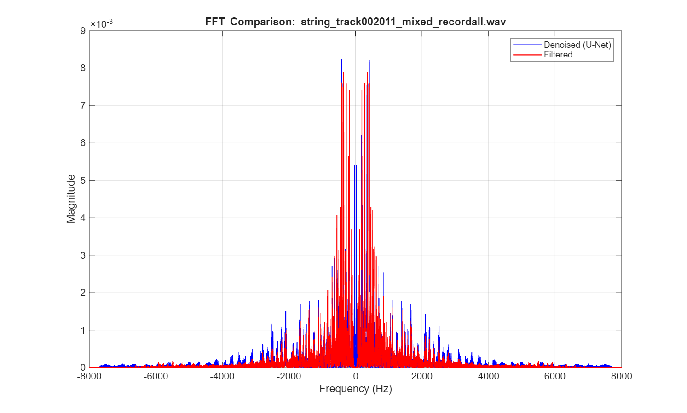
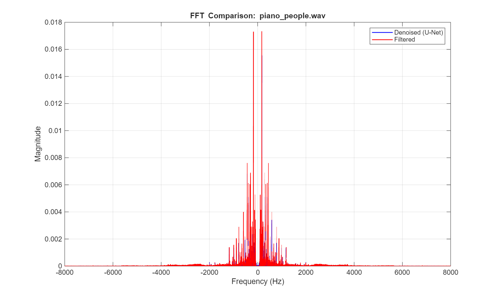

Result
In this section, we present the results of our U-Net and Basic Filtering methods working with four different noise types. The noise types are (1) people chattering, (2) air conditioning, (3) people chattering & air conditioning, and (4) people reading
Noise #1: People Chattering
People chattering was actually the first noise we worked with. For that noise, used the online repository
https://depositonce.tu-berlin.de/items/aa9f01e1-3eb7-44f9-a5c8-fe1b4c858024
For training & validating the U-Net, we used instrumental files from the online repo
https://magenta.withgoogle.com/datasets/cocochorales
Here is an example clean audio track from the online repository used.
string_track002025 (clean)
Here is a random segment of that file noised by the people chattering sound.
string_track002025 (noised)
Here is that file denoised using our U-Net deep learning algorithm.
string_track002025 (denoised by U-Net)
Below is the same noisy clip denoised by our basic filtering pipeline for comparison.
string_track002025 (denoised by Basic Filtering)
The FFT plot below compares the U-Net output and the filtered output for this same clip. This helps visualize how the traditional filtering pipeline and the learned model suppress frequency content differently.

Overall, the U-Net performed really well as it eliminated the chattering noise almost entirely. We were also insterested on how our models would perform on self-recorded clips, like this clip of a Chinese Guzheng. Here is a audio file of the Guzheng and people talking in the background.
Guzheng1_new (noisy)
And here is that file denoised by our U-Net.
Guzheng1_ckpSAM (denoised by U-Net)
We also denoised the same Guzheng recording using our basic filtering pipeline.
Guzheng1_filtered (denoised by Basic Filtering)
The FFT comparison below shows the difference between the filtered result and the U-Net result on this self-recorded Guzheng clip.

Noise #2: Air Conditioning
The next audio source we tackled was air conditioning. We'll start by presenting the results of an audio recording in the instrumental music validation set above.
string_track002011 (clean)
string_track002011_mixed_AC (noised with AC)
string002011_ckpAC (denoised with U-Net)
Below is the same AC-noised clip denoised by the basic filtering pipeline.
string_track002011_mixed_AC (denoised by Basic Filtering)
The FFT plot below compares the filtered result and the U-Net result for the same AC-noised audio segment.

Like the last section, we also tested our models with self-recorded clips. This time, it was a clip of Ronald playing a bellset with air conditioning in the background.
Original Clip of Bellset & AC
Denoised Clip of Bellset & AC (U-Net)
Denoised Clip of Bellset & AC (Basic Filtering)
The FFT comparison below helps compare how the traditional filter pipeline and the U-Net denoiser shape the frequency content of the same bellset recording.

In the U-Net denoised clip, the air conditioning noise is much quieter, however the sound of the mallets hitting the keys is not as "sharp" as the original clip. We can hear some echo.
Noise #3: People Chattering & Air Conditioning
What if audio files had TWO types of noise instead of just one? Could our model still work? That is what we are investigating in this section. We'll again start with string_track002011 from the validation set.
string_track002011 (clean)
string_track002011_mixed_all (both noises applied)
string_track002011ckpALL (denoised by U-Net)
We also applied the basic filtering pipeline to the same double-noise clip.
string_track002011_mixed_all (denoised by Basic Filtering)
The FFT figure below compares the filtered output and the U-Net output for the two-noise case. This gives a direct visual comparison of how well each method suppresses the combined interference.

The U-Net performed pretty well at elimiating both noises. We can hear some people chattering at the beginning, but nothing too significant. We also tested the removal of these two noises with the Guzheng. (come back)
Noise #4: People Reading
The last noise source we explored was of someone reading in the background. Could this be different than people chattering? We'll start with a recording from the validation set, and then move into a self-recorded example.
string_track002018 (clean)
string_track002018_mixed_recordall (noised with people reading)
string_002018_ckpRECORDALL (denoised by U-Net)
To explore the real world case, here is a self-recording of a reader and a piano player.
piano_people (piano with reader)
piano_people_denoised (denoised by U-Net)
Below is the same piano-and-reading clip processed by the basic filtering pipeline.
piano_people_filtered (denoised by Basic Filtering)
The FFT figure below compares the filtered result and the U-Net result on this recording, giving a direct frequency-domain comparison between the two denoising approaches.

Key Takeaways
Our group learned a lot from this project, and from the results in this section. One of the main trends in our results is that denoising using the U-Net algorithm is more effective than using basic filtering. For most of the clips in our validation set, U-Net did an admirable job, removing most of the desired noise. However, in some of the self-recorded clips (like in subsection 2 with Bells & AC), U-Net did not do as well.
Some ideas our group has is that the noise sources used during training is not the same as noise sources in 'real life', taking place in the self-recordings. It also could be possible that our training clips were too similar to each other, making our U-Net less effective in the general case. However, we are still happy with the results.